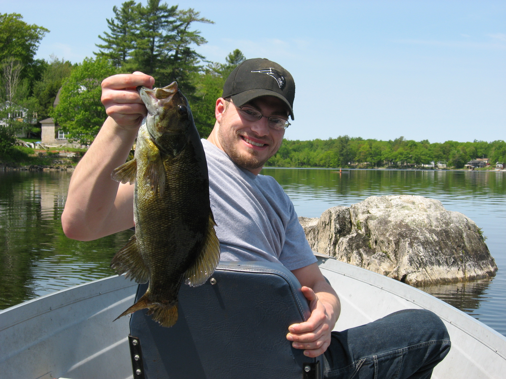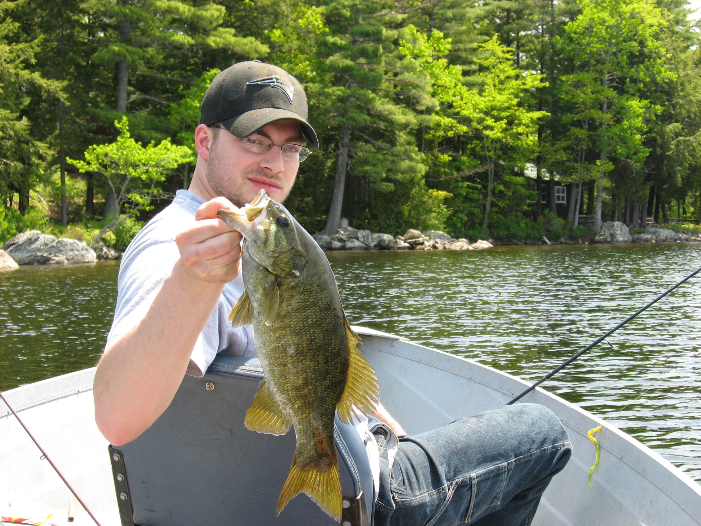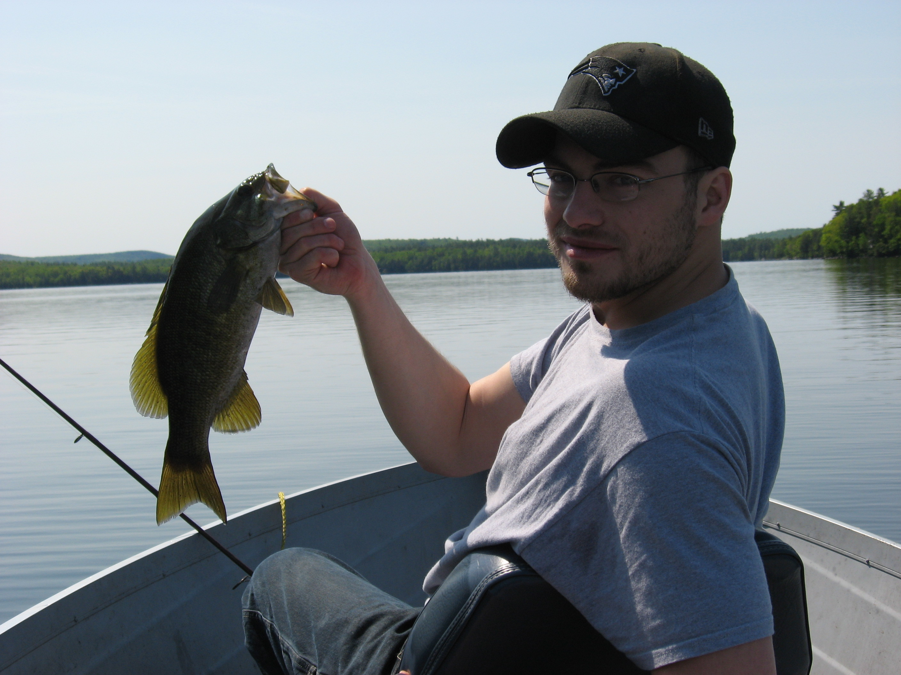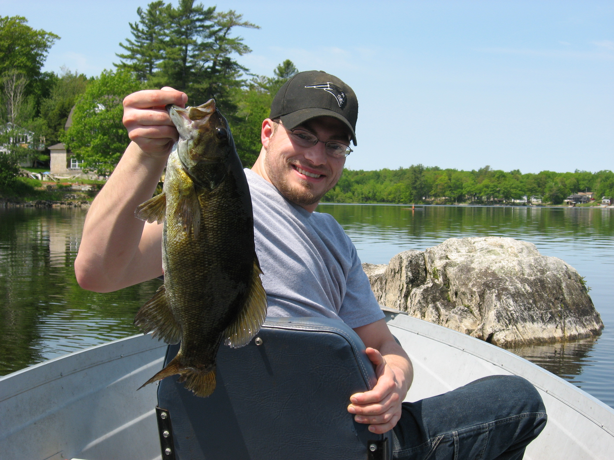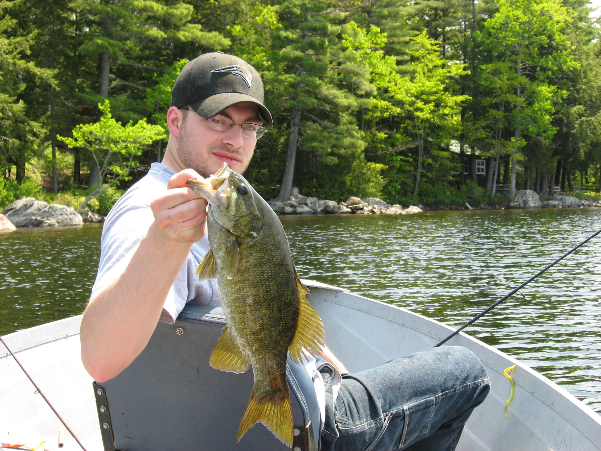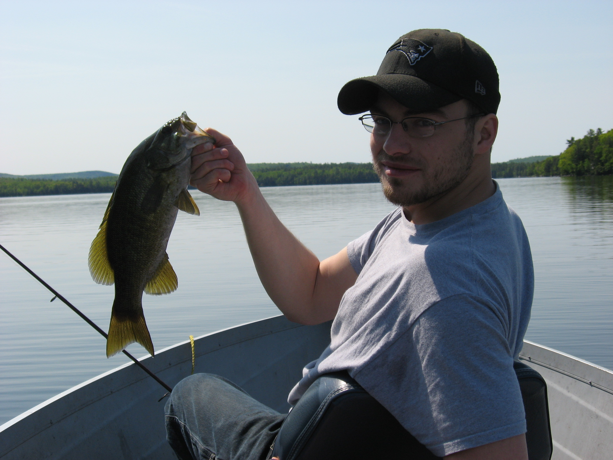
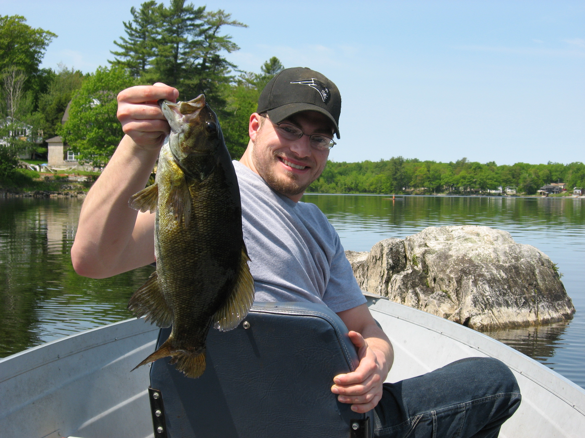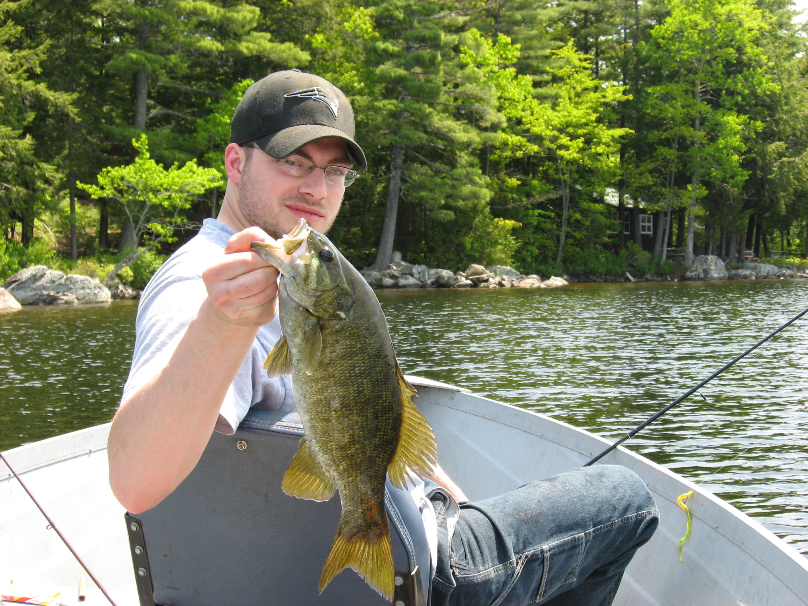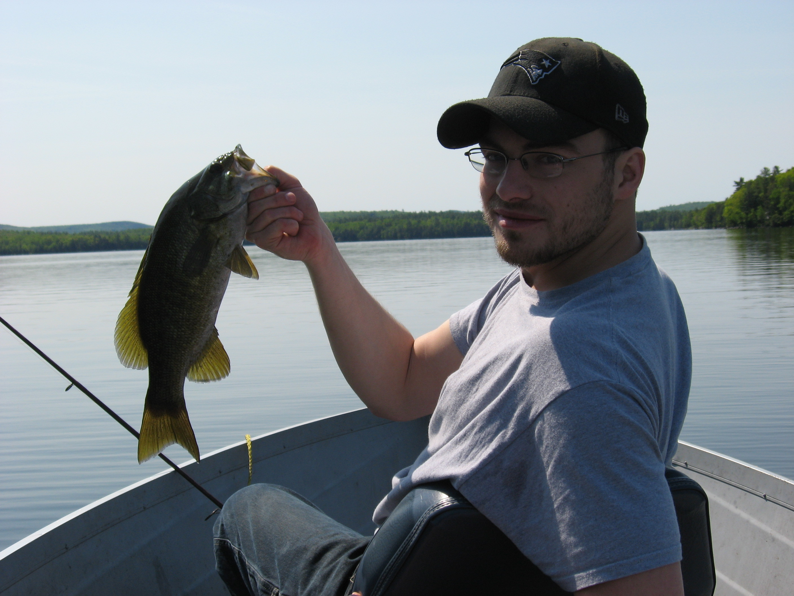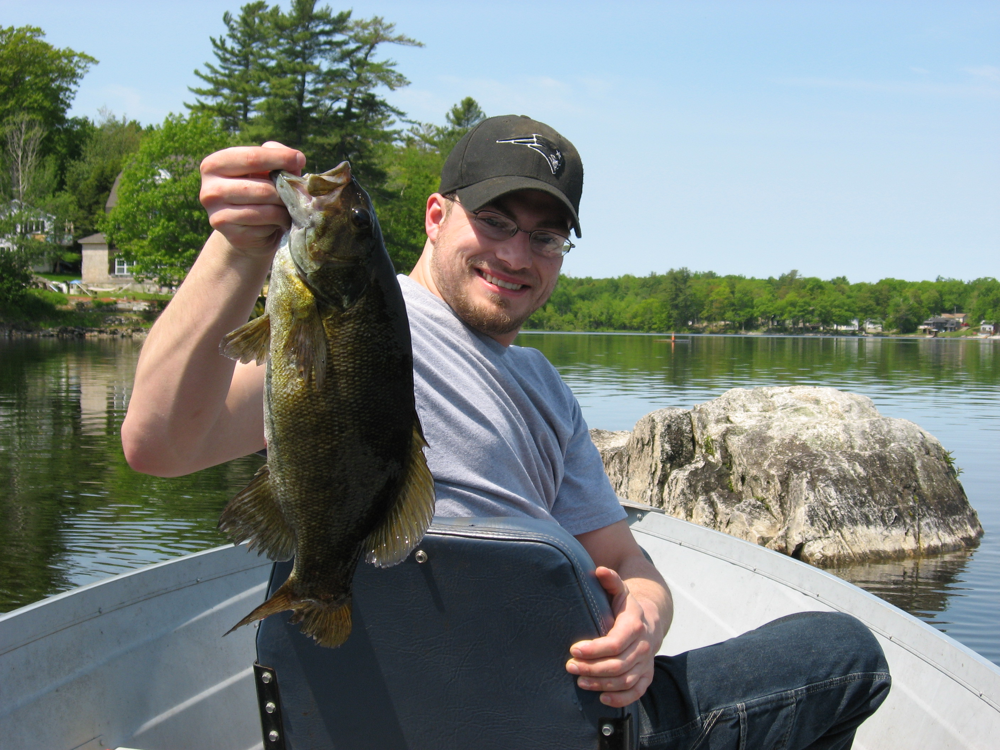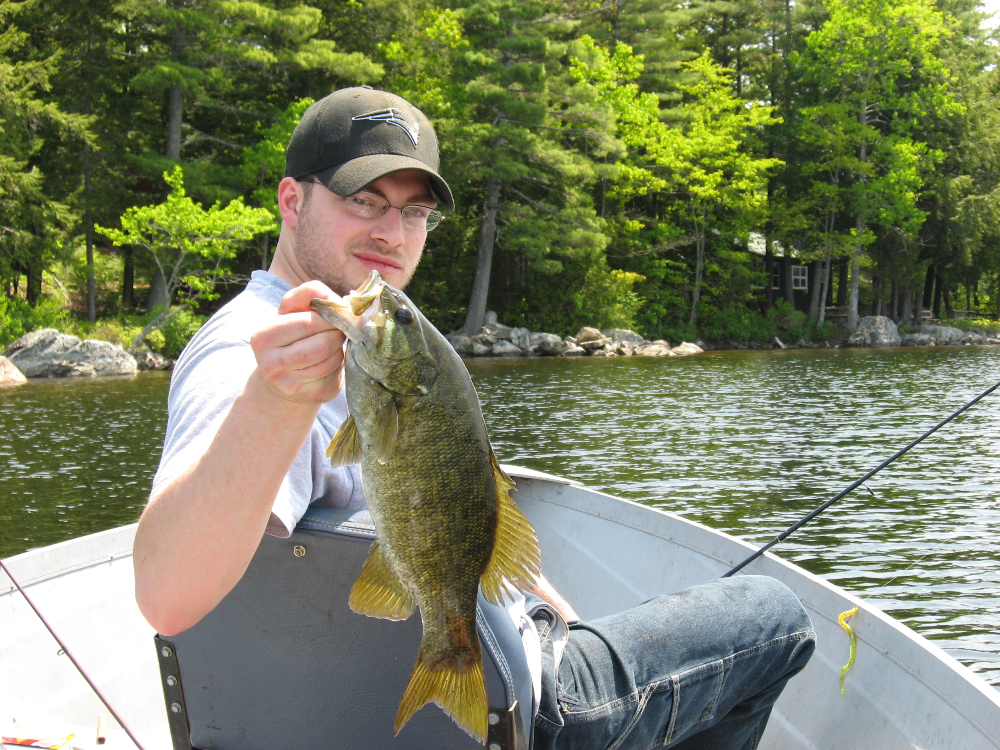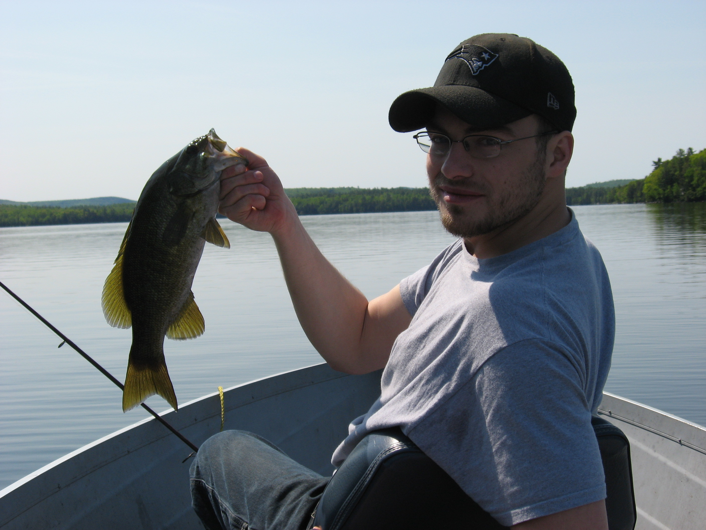One of my major passions in life is fishing. My dad started taking me fishing from a very young age, and I have always loved it. Being outside and enjoying the day fishing, was some of the best days I can rememeber. We started fishing from a canoe and typically went to Nokomis Pond; however, few years ago we bought a boat and enjoy exploring different lakes and ponds trying to find a new spot nobody knows about and catch the big one. The main fish we like to catch are small mouth bass. We don't keep the fish we catch, for us it is just a sport and a reason to be out on the water. Fishing is a big part of me, and I will continue fish for as long as I can. I hope to pass the skill down to my children someday.
| Hyperlinks | |
|---|---|
| Index | Traveling |
| Automotive | Guitar |